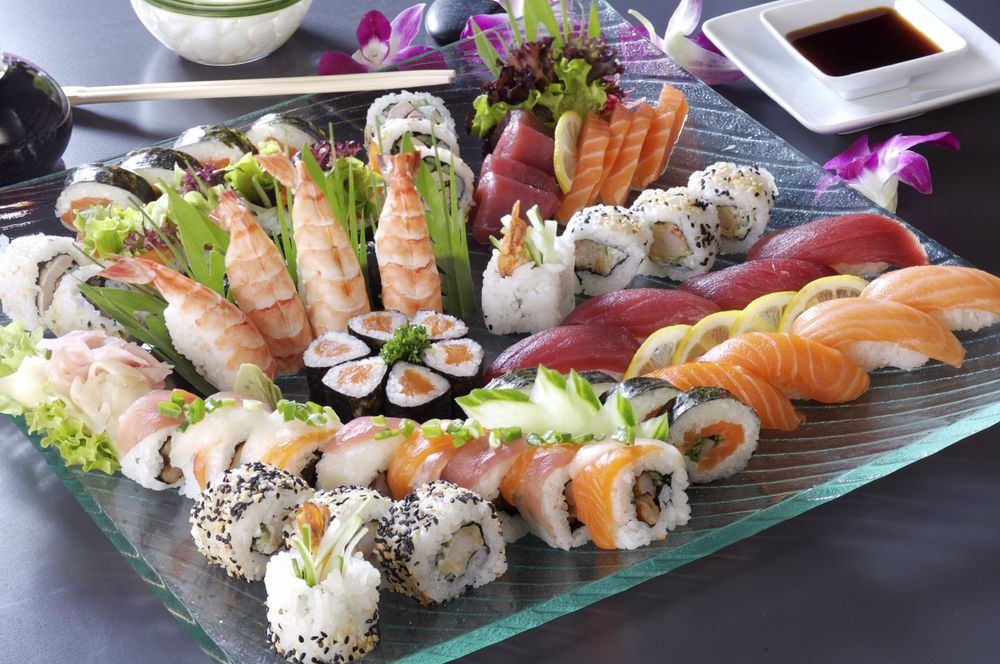
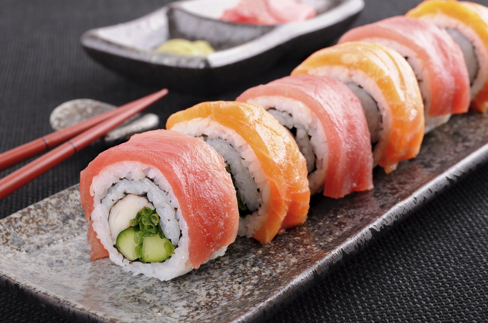
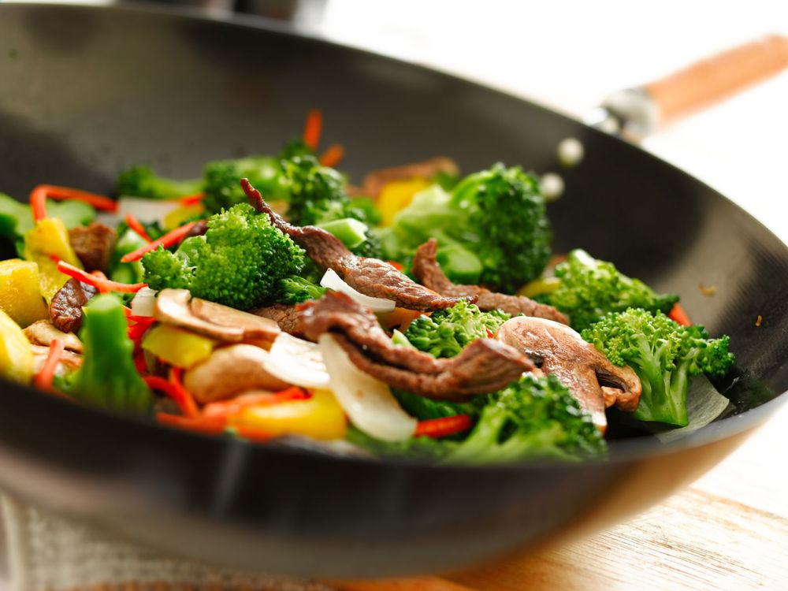

Vietnamesische Küche & Sushi, frisch zubereitet.
Ob knackige Frühlingsrollen, wärmende Pho oder frisch gerollte Maki – bei Chôm Chôm gibt es beides unter einem Dach. Zum Essen im Lokal oder zum Mitnehmen.

Zwei Küchen, ein Lokal
Von der klassischen Pho-Suppe bis zur Sushi-Rolle mit Lachs und Avocado – bei Chôm Chôm treffen vietnamesische Familienküche und japanisches Sushi-Handwerk aufeinander.

Sushi & Maki
Nigiri, Inside-Out- und Nori-Maki, Sashimi, Temaki und Sushi-Menüs für 1 bis 3 Personen.

Vietnamesische Küche
Pho, Currys, Wan-Tan-Suppe, gebratene Nudeln und Reisgerichte mit Huhn, Rind, Ente, Garnelen oder vegetarisch.
Spezialitäten des Hauses
Chôm Chôm Garnelen, Garnelen mit Ingwer oder Zitronengras, gebratene Nudeln mit knuspriger Ente – exklusiv auf unserer Karte.
Nur Barzahlung
Bei uns wird bar bezahlt – bitte daran denken, wenn ihr vorbeikommt.
Alles auch zum Mitnehmen
Die komplette Karte gibt es ebenso zum Abholen – einfach anrufen und vorbestellen.
Mittags- & Abendkarte
Mittags und abends gelten unterschiedliche Preise – auf der Speisekarte jeweils extra ausgewiesen.
Ambiente in Sauerlach
Warmes Holz, eine Fotowand mit alten Vietnam-Aufnahmen und Platz für kleine und größere Runden – ein paar Eindrücke aus unserem Lokal am Bahnhofplatz.


Was unsere Gäste sagen
Frisch zubereitet, authentisch und ein faires Preis-Leistungs-Verhältnis – das schätzen Gäste an Chôm Chôm besonders.
Alle Google-Bewertungen lesenBestellung telefonisch aufgeben
Ruft an, bestellt vor und holt eure Gerichte frisch zubereitet ab – oder lasst es euch im Lokal schmecken.
08104 888 476